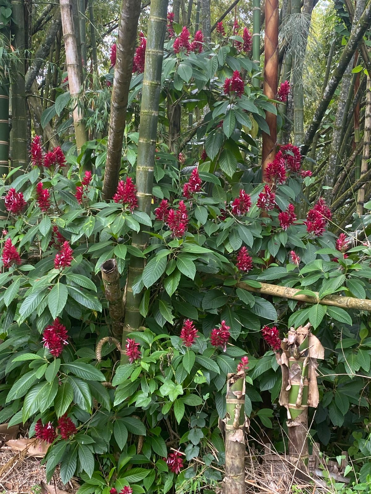
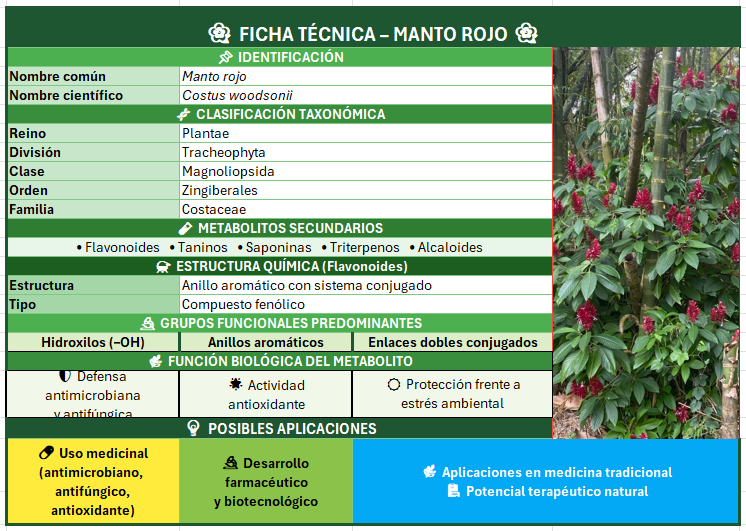

Nombre Común: Manto Rojo
Nombre Científico: Costus Woodsonii
Familia Botánica: Costaceae
Ubicación en el sendero: en el camino posterior a la granja

El Costus woodsonii, conocido comúnmente como manto rojo, es una planta herbácea ornamental de la familia Costaceae que crece en climas cálidos y húmedos, destacándose por sus inflorescencias de color rojo intenso y su presencia frecuente en jardines tropicales. Desde el punto de vista químico, esta especie produce metabolitos secundarios como flavonoides, taninos, saponinas, triterpenos y alcaloides, los cuales presentan estructuras con sistemas aromáticos conjugados y abundantes grupos funcionales como hidroxilos (-OH), enlaces dobles y anillos aromáticos. Estas características les permiten cumplir funciones importantes como la defensa frente a microorganismos, la actividad antioxidante y la protección contra el estrés ambiental, contribuyendo a la resistencia de la planta en su entorno natural.
